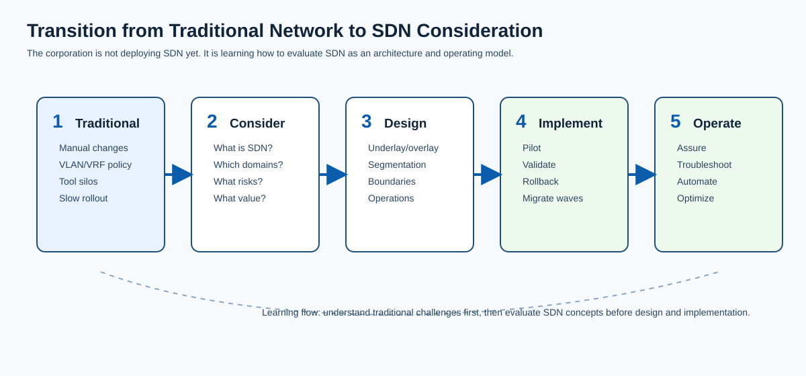
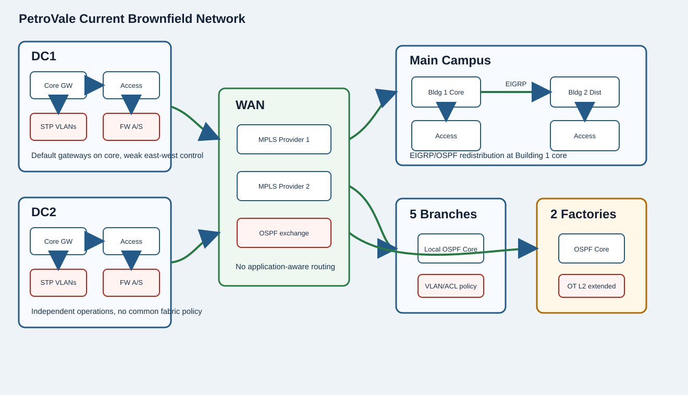
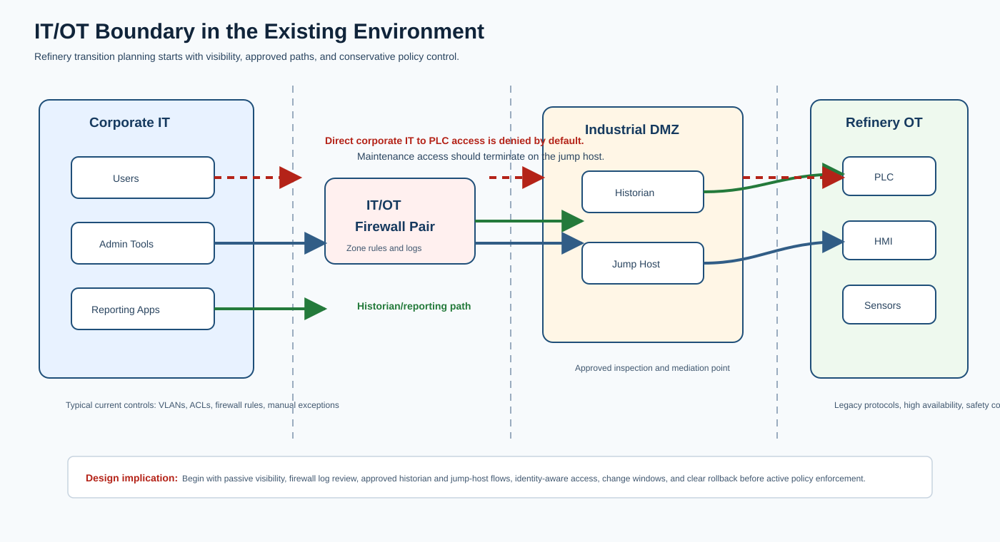

Company Background
PetroVale Energy
PetroVale Energy is a petroleum corporation operating upstream offices, refinery environments, fuel distribution terminals, branch offices, data centers, cloud workloads, SaaS applications, and remote access services.
Your Role
You are part of PetroVale's IT organization as the SDN Network Architect. Your responsibility is to clarify SDN concepts, challenge assumptions, evaluate brownfield constraints, and advise the architecture working group on a realistic transition path from traditional networking toward SDN-oriented operations.
Organization and Stakeholders
Executive Leadership
- Nguyễn Thu Hà, CEO - sponsors the modernization program and expects a staged, business-aligned roadmap.
- Trần Minh Linh, CIO - owns enterprise IT strategy and wants SDN framed before vendor selection.
- Nguyễn Hoàng Minh, CTO - leads technical governance and challenges architecture assumptions.
- Lê Thu Trang, CISO - owns cyber risk, policy governance, and IT/OT security posture.
IT and Architecture
- You, SDN Network Architect - member of the IT team responsible for SDN architecture guidance.
- Phạm Quỳnh Anh, Enterprise Architect - coordinates domain boundaries, architecture principles, and roadmap alignment.
- Đỗ Ngọc Lan, Director of Network Operations - owns NOC readiness and operational transition.
- Vũ Đức Anh, Automation Lead - evaluates APIs, source-of-truth readiness, and low-risk automation.
Domain Stakeholders
- Nguyễn Văn Thành, Refinery Operations Manager - protects refinery availability and OT safety constraints.
- Trần Hải Yến, WAN Operations Lead - owns branch connectivity, failover, and transport quality.
- Lê Quốc Bảo, Cloud Platform Lead - owns cloud route control, security groups, and cloud logging.
- Phạm Thùy Dương, VP Regional Operations - represents branch, terminal, and business-user experience.
Business Priorities
- Improve segmentation between corporate IT, contractors, guest, IoT, and refinery OT.
- Reduce time required to deploy branch and terminal network services.
- Improve visibility into user-to-application and refinery-to-historian traffic.
- Standardize policy across campus, branch, data center, cloud, and remote access.
- Reduce operational risk from manual device-by-device configuration.
- Maintain safe and stable refinery operations during any transition.
Executive Constraints
- No enterprise-wide hardware refresh in the first year.
- The routing core and firewalls remain during initial phases.
- Refineries cannot tolerate disruptive probing or uncontrolled policy changes.
- The operations team is strong in routing and switching but new to controllers and APIs.

Current Network Diagram
Brownfield Network Baseline
The current environment uses traditional routing, VLANs, 5-tuple ACLs, firewall zones, manual rule management, basic SNMP monitoring, and a separate syslog server. These diagrams are the primary reference for boundary, underlay, policy, campus, WAN, data center, and IT/OT questions.

Current State
- Two independent data centers use traditional two-tier switching; DC cores are default gateways for server VLANs.
- WAN routers connect to remote offices and factories through two Layer 3 MPLS VPN providers using OSPF.
- The main campus mixes two-tier and three-tier design with EIGRP-to-OSPF redistribution.
- Branches and factories have local OSPF cores; OT networks are currently extended Layer 2.
- Segmentation relies on VLANs and 5-tuple ACLs across core, distribution, WAN routers, and firewalls.
Observed Challenges
- No application-aware WAN routing.
- No identity per user or IoT device and no current microsegmentation.
- No macro segmentation between corporate and contractor traffic.
- Data center east-west policy is weak and STP convergence can cause long outages.
IT/OT Boundary

Scenario Updates
Scenario Updates
Information in this section appears only after it becomes relevant in the workshop flow.